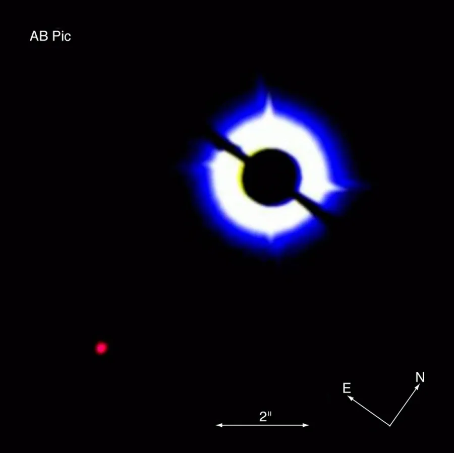

30. April 2005
Begleiter von AB Pictoris an der Grenze zwischen Planet und Braunem Zwerg
Das Instrument NACO am Very Large Telescope der ESO hat neben dem jungen Stern AB Pictoris einen lichtschwachen Begleiter abgebildet. Auf der koronografischen Aufnahme vom März 2003 ist der Stern hinter einer Maske verborgen; der Begleiter erscheint als roter Punkt links unten.
Beobachtungen über anderthalb Jahre zeigten, dass es kein Hintergrundobjekt ist. Modellrechnungen ergaben 13 bis 14 Jupitermassen – genau an der Grenze zwischen massereichem Planeten und Braunem Zwerg. AB Pictoris ist etwa 150 Lichtjahre entfernt; der Begleiter steht rund neunmal weiter von ihm entfernt als Neptun von der Sonne.
Quellen: ESO: "Yes, it is the Image of an Exoplanet. Astronomers Confirm the First Image of a Planet Outside of Our Solar System" (eso0515; contains the section on AB Pictoris)., 30.04.2005; ESO: "The star AB Pictoris and its companion" (image eso0515d)., 30.04.2005